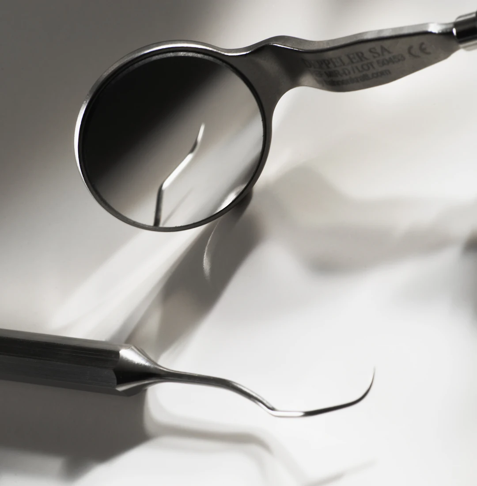
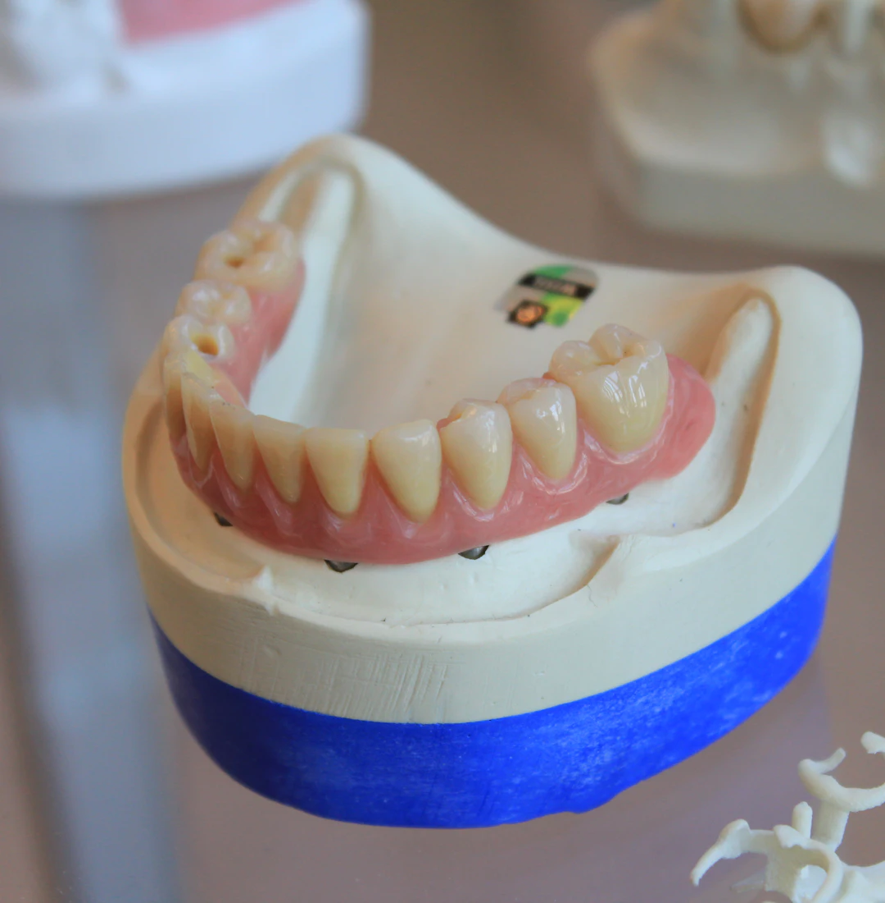
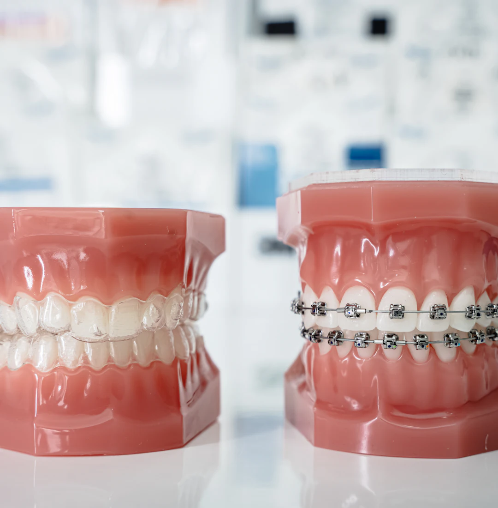
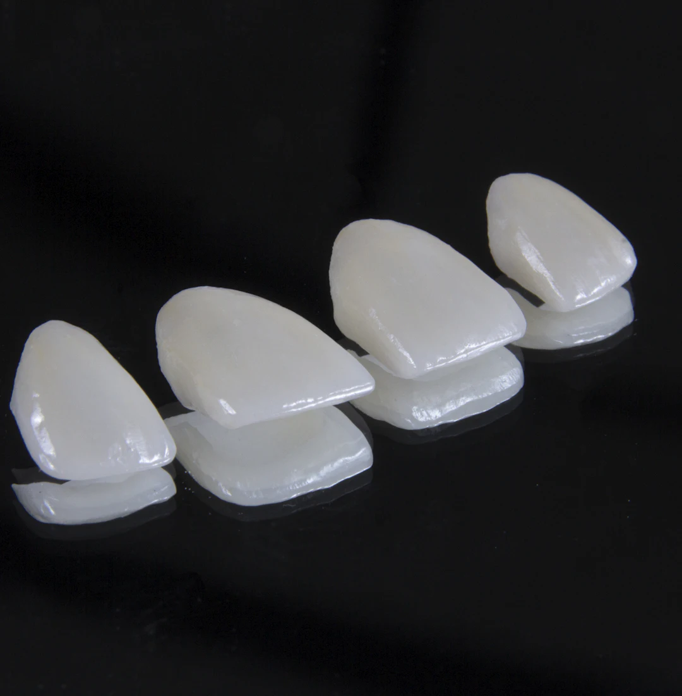
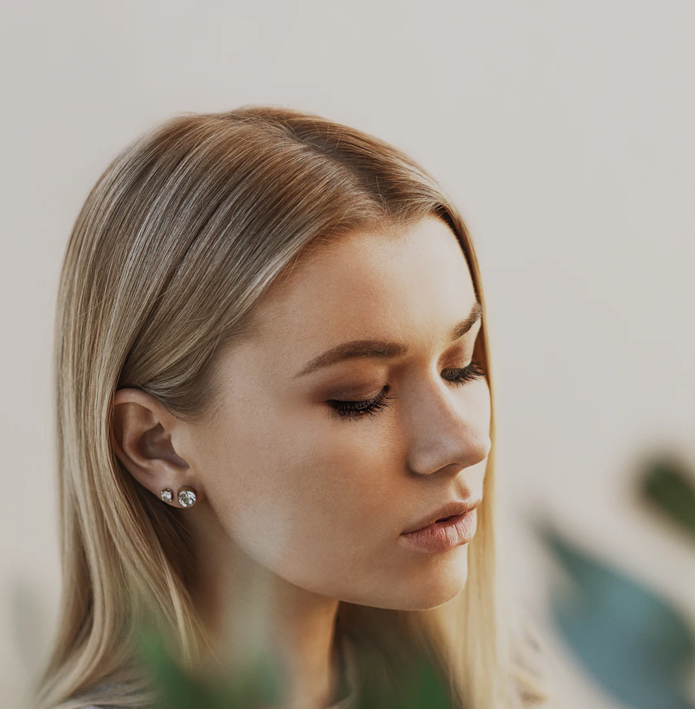
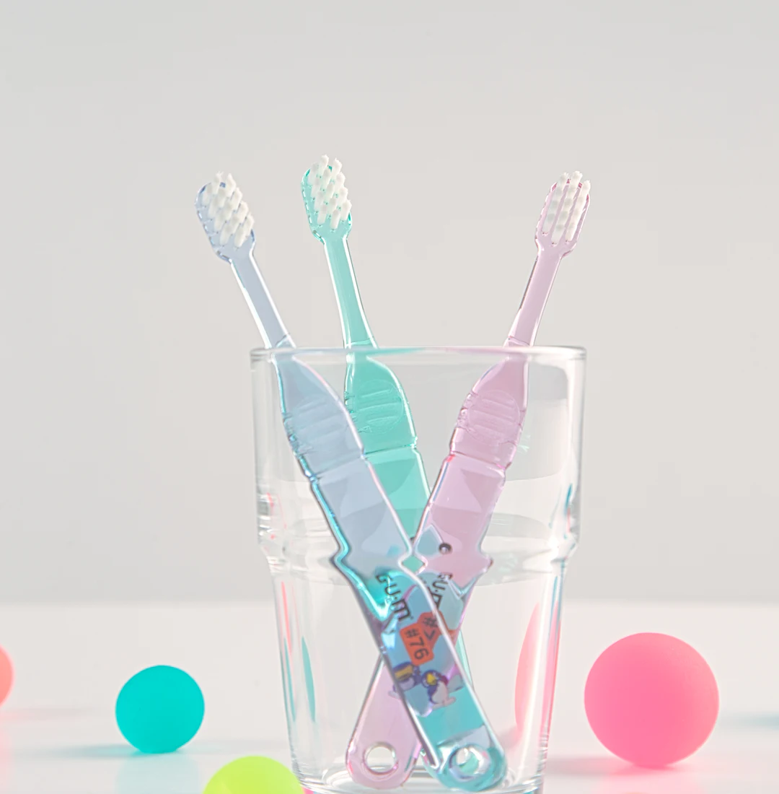
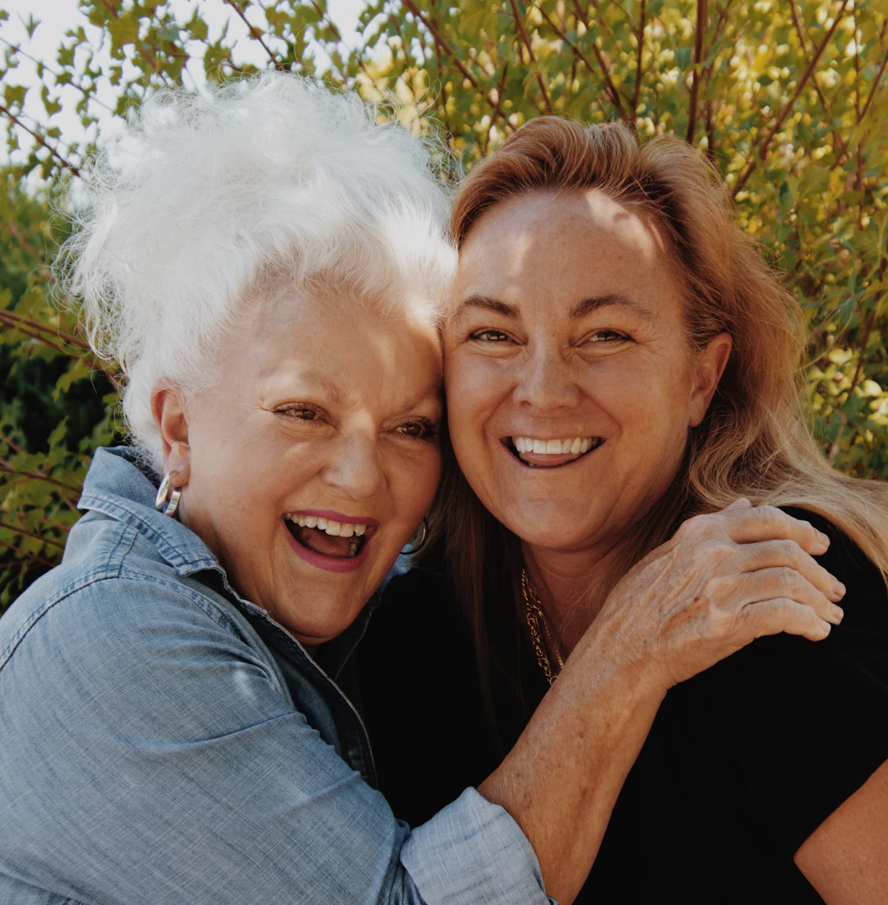
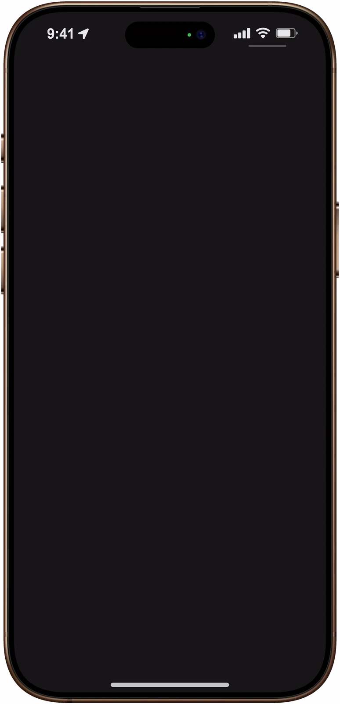
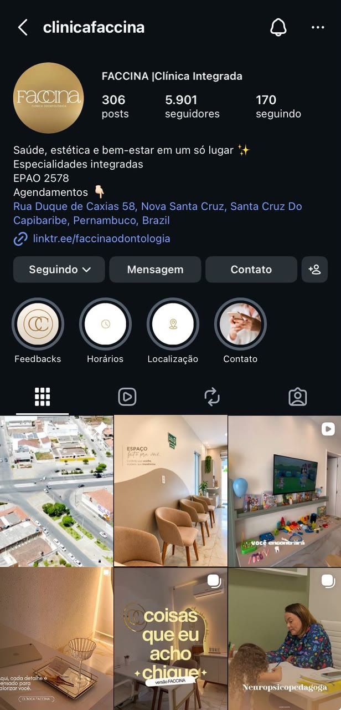

Clínica integrada em Santa Cruz do Capibaribe
Todo o cuidado
em um só lugar.
Do primeiro dentinho do seu filho à consulta dos seus pais, tudo no mesmo endereço.
Role e veja o que tem do lado de dentro
Nota 4,8 no GoogleEspecialidades
Cuidando de pessoas
por inteiro.
-

Clínica geral
profissional a confirmar
Da consulta de rotina à dor que não pode esperar. Antes de qualquer procedimento, você entende o que vai ser feito e por quê.
Clínica geral · Urgência · Gengiva · Tratamento de canal
-

Implantes e próteses
profissional a confirmar
Perder um dente tem mais de uma solução. Implante, ponte ou dentadura: a gente apresenta cada caminho e você escolhe com calma.
Implantes · Pontes · Dentaduras
-

Ortodontia
Dra. Anne Caroline de Lima
CRO/PE 9164Aparelhos com a manutenção feita aqui mesmo. Nos pequenos, a ortopedia funcional acompanha o crescimento.
Aparelhos · Manutenção · Ortopedia funcional infantil
-

Estética do sorriso
profissional a confirmar
Clareamento e facetas em resina planejados pro seu rosto, não copiados de catálogo. A ideia é realçar o seu sorriso, não trocar por outro.
Clareamento · Facetas em resina
-

Harmonização orofacial
Dra. Thalita Silva Soares
CRO a confirmarA sua beleza merece destaque. Cada aplicação começa por uma avaliação da sua face.
Toxina botulínica · Preenchimentos · Preenchimento labial
-

Odontopediatria
Dra. Anne Caroline de Lima
CRO/PE 9164Cantinho kids na espera, laser que deixa o atendimento mais leve e certificado de coragem na saída. Ir ao dentista pode virar um bom passeio.
Laserterapia · Crianças com necessidades especiais
-
Desenvolvimento infantil
Dra. Gabriela Monteiro
Maria Luana
equipe a confirmarCuidar hoje, desenvolver um futuro cheio de possibilidades. Comportamento, aprendizagem, alimentação e sono acompanhados no mesmo endereço.
Pediatria · Neurodesenvolvimento · Psicologia infantil · Neuropsicopedagogia · Nutrição infantil
-

Adulto e idoso
Dr. Hipólito
equipe a confirmarGeriatria pros seus pais e psicanálise pra você. Quem cuida de todo mundo também merece um horário só seu.
Geriatria · Psicanálise clínica
A clínica
Aqui, o cuidado começa antes mesmo do atendimento.
Ambiente aconchegante, atendimento atencioso e profissionais super competentes. Me senti muito bem cuidada do início ao fim. Recomendo!
Joicy T.
Ambiente lindo e agradável, instalações de alta qualidade e bom gosto, equipamentos de última geração, recepção acolhedora, profissionais de alto nível. Uma aquisição maravilhosa para a Santa Cruz do Capibaribe, que também é exemplo de empreendorismo e qualidade. Parabéns para toda a equipe.
Suitberto C.
Eu adoro a clínica e os profissionais, trago minha filha a um tempo e doutora Anne é incrível
Iasmim M.
Gostei muito do atendimento, os profissionais estão de parabéns pelo seu acolhimento com os pacientes. Excelentes profissionais obrigada clínica faccina!
Teresinha S.
Ótimo atendimento um lugar fascinante. Ambiente gostoso... Tudo vip.
Pr Marcos G.
Foi Ótimo, profissionais extremamente qualificados e um ótimo atendimento. Me senti muito confortável.
Leticia G.
Como chegar
Localize nossa clínica.
- Endereço
- R. Pref. Augustinho Rufino de Melo, 58, Nova Santa Cruz
Santa Cruz do Capibaribe, PE a confirmar - Horário
- Segunda a sexta, das 8h às 12h e das 14h às 22h
Sábado, das 8h às 12h a confirmar
Atendimento com hora marcada - Acessibilidade
- Entrada, banheiro e assento acessíveis para cadeirantes. Sala de amamentação.
Siga nossa clínica de perto e veja a qualidade.

